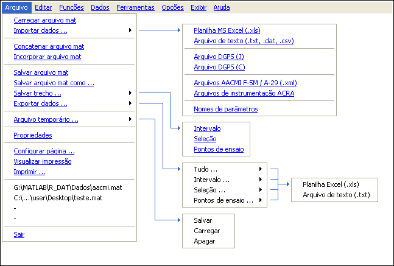

| Menu
Arquivo |
|
O menu
“Arquivo” provê acesso às operações de leitura e
gravação de dados. Através dele é possível realizar as seguintes
operações:
- Carregar e
salvar arquivos de dados no formato padrão (.mat);
- Concatenar e
incorporar outros arquivos .mat ao arquivo aberto;
- Importar e
exportar dados em formatos externos;
- Salvar e
exportar trechos de interesse da matriz de dados;
- Salvar e
carregar cópia temporária do arquivo atual para uso como backup de
modificações;
- Ver as propriedades do arquivo atual, editar e remover variáveis auxiliares;
- Configurar impressão e imprimir a janela do R_DAT;
- Acessar
rapidamente os arquivos recentes;
- Sair do R_DAT.
Estrutura
do menu “Arquivo”:

|
Nota: Nota:
Se durante
alguma operação ocorrer esgotamento de memória RAM para o MATLAB
(mensagem de erro
"OUT OF MEMORY"), poderá ocorrer corrupção das matrizes de
trabalho. Nesse caso, reinicie o R_DAT e recarregue o último
arquivo
salvo (o trabalho
não salvo será perdido). |
| |
Início |
Carregar
arquivo mat |
|